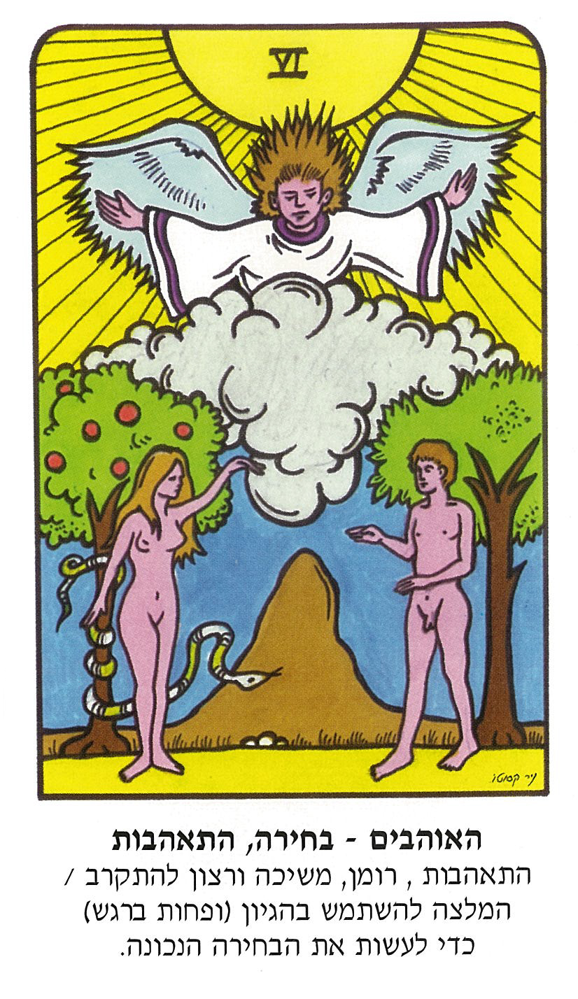
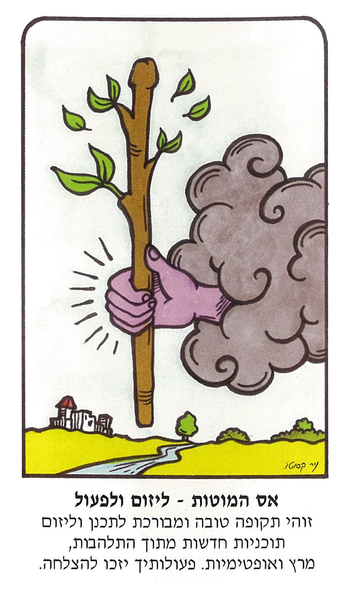
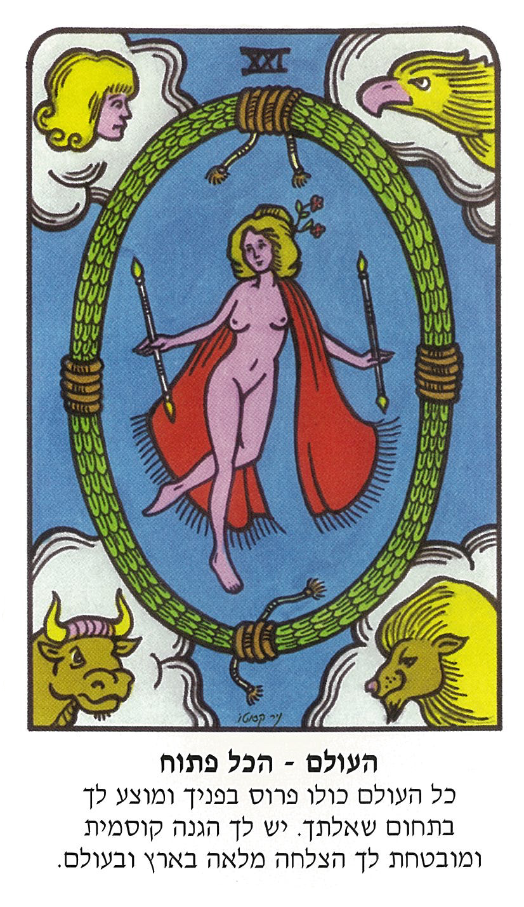

קלפי הטארוט היחידים עם הפירושים
עם חוכמת הטארוט גם אתם יכולים להיות קוראים בקלפים.
פתיחה עצמאית בקלפים
קלפי הטארוט היחידים שמאפשרים פתיחה בקלפים ללא ידע קודם.
מאפשר קשר עם האינטואיציה
בעזרת הקלפים אפשר לקבל מסרים מהאני העליון ומהאינטואיציה.
  
הקלפים הם כלי חובה לכל סטודנט לקריאה בקלפים.
חוכמת הטארוט היא המתנה האידיאלית.
חוכמת הטארוט מאפשרת פיתוח אינטואיציה.
כל אחד יכול לפתוח בקלפים בעזרת חוכמת הטארוט.
איך פותחים בקלפים?
שואלים שאלה.
לוקחים קלף (עד 4 קלפים).
קוראים את פירוש הקלף.
נותנים לאינטואיציה להנחות את הבנת התשובה.
צור קשר